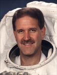

Lyndon B. Johnson Space Center
Houston, Texas 77058
|
National Aeronautics and Space Administration Lyndon B. Johnson Space Center Houston, Texas 77058 |
 |
Biographical Data |
||
John M. Grunsfeld (Ph.D.)
NASA ASTRONAUT (FORMER)
PERSONAL DATA: Born in Chicago, Illinois. Married to the former Carol E. Schiff. They have two children. John enjoys mountaineering, flying, sailing, bicycling and music. His father, Ernest A. Grunsfeld III, resides in Highland Park, Illinois. Carol's parents, David and Ruth Schiff, reside in Highland Park, Illinois.
EDUCATION: Graduated from Highland Park High School, Highland Park, Illinois, in 1976; received a bachelor of science degree in physics from the Massachusetts Institute of Technology in 1980; a master of science degree and a doctor of philosophy degree in physics from the University of Chicago in 1984 and 1988, respectively.
ORGANIZATIONS: American Astronomical Society, American Alpine Club, Explorers Club, Experimental Aircraft Association, Aircraft Owners and Pilot Association.
SPECIAL HONORS: W.D. Grainger Fellow in Experimental Physics, 1988 to 1989; NASA Graduate Student Research Fellow, 1985 to 1987; NASA Space Flight Medals (1995, 1997, 1999 and 2002); NASA Exceptional Service Medals (1997, 1998 and 2000); NASA Distinguished Service Medal (2002); Distinguished Alumni Award, University of Chicago; Alumni Service Award, University of Chicago; Komarov Diploma (1995); Korolov Diploma (1999 and 2002); NASA Constellation Award (2004); Society of Logistics Engineers and Space Logistics Medal (2006).
EXPERIENCE: Dr. Grunsfeld's academic positions include that of Visiting Scientist, University of Tokyo/Institute of Space and Astronautical Science (1980 to 1981); Graduate Research Assistant, University of Chicago (1981 to 1985); NASA Graduate Student Fellow, University of Chicago (1985 to 1987); W.D. Grainger Postdoctoral Fellow in Experimental Physics, University of Chicago (1988 to 1989) and Senior Research Fellow, California Institute of Technology (1989 to 1992). Dr. Grunsfeld's research has covered x-ray and gamma ray astronomy, high-energy cosmic ray studies and the development of new detectors and instrumentation. Dr. Grunsfeld studied binary pulsars and energetic x-ray and gamma ray sources using the NASA Compton Gamma Ray Observatory, x-ray astronomy satellites, radio telescopes and optical telescopes, including the NASA Hubble Space Telescope.
NASA EXPERIENCE: Dr. Grunsfeld was selected by NASA in March 1992 and reported to the Johnson Space Center in August 1992. He completed one year of training and is qualified for flight selection as a mission specialist. Dr. Grunsfeld was initially detailed to the Astronaut Office Mission Development Branch and was assigned as the lead for portable computers for use in space. Following his first flight, he led a team of engineers and computer programmers tasked with defining and producing the crew displays for command and control of the International Space Station (ISS). As part of this activity, he directed an effort combining the resources of the Mission Control Center (MCC) Display Team and the Space Station Training Facility. The result was the creation of the Common Display Development Facility (CDDF), which is responsible for the onboard and MCC displays for the ISS, using object-oriented programming techniques. Following his second flight, he was assigned as Chief of the Computer Support Branch in the Astronaut Office, supporting the Space Shuttle and International Space Station Programs and advanced technology development. Following STS-103, he served as Chief of the Extravehicular Activity Branch in the Astronaut Office. Following STS-109, Grunsfeld served as an instructor in the Extravehicular Activity Branch and Robotics Branch and worked on the exploration concepts and technologies for use beyond low Earth orbit in the Advanced Programs Branch. He also served as the NASA Chief Scientist detailed to NASA Headquarters from 2003 to 2004, where he helped develop the President's Vision for Space Exploration. A veteran of five spaceflights, STS-67 (1995), STS-81 (1997), STS-103 (1999) STS-109 (2002) and STS-125 (2009), Dr. Grunsfeld has logged more than 58 days in space, including 58 hours and 30 minutes of EVA in 8 spacewalks. Dr. Grunsfeld retired from NASA in December 2009 and served as Deputy Director, Space Telescope Science Institute, in Baltimore, Maryland. He returned to NASA in January 2012 to serve as the Associate Administrator of the Science Mission Directorate at the agency's headquarters in Washington.
SPACE FLIGHT EXPERIENCE: STS-67/Astro-2 Endeavour (March 2 to March 18, 1995) launched from Kennedy Space Center, Florida, and landed at Edwards Air Force Base, California. It was the second flight of the Astro observatory, a unique complement of three ultraviolet telescopes. During this record-setting 16-day mission, the crew conducted observations around the clock to study the far ultraviolet spectra of faint astronomical objects and the polarization of ultraviolet light coming from hot stars and distant galaxies. Mission duration was 399 hours and 9 minutes.
STS-81 Atlantis (January 12 to January 22, 1997) was a 10-day mission, the fifth to dock with Russia's Space Station Mir and the second to exchange U.S. astronauts. The mission also carried the Spacehab double module, providing additional middeck locker space for secondary experiments. In 5 days of docked operations, more than 3 tons of food, water, experiment equipment and samples were moved back and forth between the two spacecraft. Grunsfeld served as the flight engineer on this flight. Following 160 orbits of the Earth, the STS-81 mission concluded with a landing on Kennedy Space Center's Runway 33, ending a 3.9-million-mile journey. Mission duration was 244 hours and 56 minutes.
STS-103 Discovery (December 19 to December 27, 1999) was an 8-day mission, during which the crew successfully installed new gyroscopes and scientific instruments and upgraded systems on the Hubble Space Telescope (HST). Enhancing HST scientific capabilities required three spacewalks (EVAs). Grunsfeld performed two spacewalks, totaling 16 hours and 23 minutes. The STS-103 mission was accomplished in 120 Earth orbits, traveling 3.2 million miles in 191 hours and 11 minutes.
STS-109 Columbia (March 1 to March 12, 2002) was the fourth HST servicing mission. The crew of STS-109 successfully upgraded the HST, installing a new digital camera, a cooling system for the infrared camera, new solar arrays and a new power system. HST servicing and upgrades were accomplished by four crewmembers during a total of five EVAs in 5 consecutive days. As Payload Commander on STS-109, Grunsfeld was in charge of the spacewalking activities and the Hubble payload. He also performed three spacewalks totaling 21 hours and 9 minutes, including the installation of the new Power Control Unit. STS-109 orbited the Earth 165 times and covered 3.9 million miles in over 262 hours.
STS-125 Atlantis (May 11 to May 24, 2009) was the fifth and final Hubble servicing mission. After 19 years in orbit, the telescope received a major renovation that included the installation of a new wide-field camera, a new ultraviolet telescope, new batteries, a guidance sensor, gyroscopes and other repairs. Grunsfeld served as the lead spacewalker in charge of the spacewalking and Hubble activities. He performed three of the five spacewalks on this flight, totaling 20 hours and 58 minutes. For the first time while in orbit, two scientific instruments were surgically repaired in the telescope. The STS-125 mission was accomplished in 12 days, 21 hours, 37 minutes and 09 seconds, traveling 5,276,000 miles in 197 Earth orbits.
FEBRUARY 2012